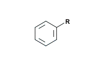
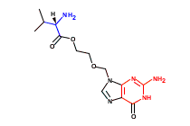
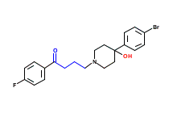
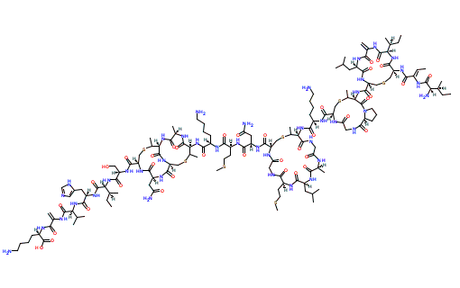
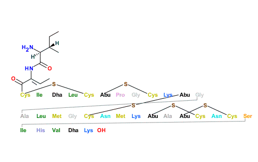

*c1ccccc

This page renders a table of annotated live pictures and their expected contents for quick review testing.
| Test Case | Live Imgage | Reference Image |
|---|---|---|
| Simple 'star' atom rendering as 'R' attachment point: *c1ccccc |
|
 |
| Test Case | Live Imgage | Reference Image |
|---|---|---|
| VALACYCLOVIR
'C12=C(N=CN1COCCOC([C@H](C(C)C)N)=O)C(NC(=N2)N)=O' colored by Avalon fingerprint bits (HCOUNT_PATH(47412)/red, AUGMENTED_ATOM(23394)/blue, fpsize=65536 bits) |
C)N)%3DO)C(NC(%3DN2)N)%3DO&nbits=65536&bits=47412,23394) |
 |
| BROMPERIDOL
'OC2(CCN(CCCC(=O)C1C=CC(F)=CC=1)CC2)C3C=CC(Br)=CC=3' colored by Avalon fingerprint bits (ATOM_COUNT(21301)/red, HCOUNT_CLASS_PATH(6403)/blue, fpsize=65536 bits) |
C1C=CC(F)=CC=1)CC2)C3C=CC(Br)=CC=3&nbits=65536&bits=21301,6403) |
 |
| Test Case | Live Imgage | Reference Image |
|---|---|---|
| NISIN-Z (direct rendering): S2C([C@@H](C(N1[C@@H](CCC1)C(=O)NCC(N[C@@H](C2)C(N[C@H](C(N[C@H]6C(C)SC[C@@H](C(=O)N[C@H](C(=O)N[C@H](C(=O)N[C@H](C(=O)N[C@H]3C(C)SC[C@@H]4NC(=O)[C@@H](NC([C@@H](NC3=O)C)=O)C(C)SC[C@H](NC([C@@H](NC4=O)CC(N)=O)=O)C(N[C@H](C(N[C@H](C(N[C@@H](CC5=CN=CN5)C(N[C@H](C(NC(C(N[C@@H](CCCCN)C(=O)O)=O)=C)=O)C(C)C)=O)=O)[C@H](CC)C)=O)CO)=O)CCCCN)CCSC)CC(N)=O)NC(CNC([C@@H](NC([C@@H](NC([C@@H](NC(CNC6=O)=O)C)=O)CC(C)C)=O)CCSC)=O)=O)=O)CCCCN)=O)=O)=O)NC([C@H]7NC([C@@H](NC(C(=C)NC(=O)[C@@H](NC([C@H](CSC7)NC(\C(\NC([C@H]([C@H](CC)C)N)=O)=C\C)=O)=O)[C@H](CC)C)=O)CC(C)C)=O)=O)C |
C(=O)NCC(N[C@@H](C2)C(N[C@H](C(N[C@H]6C(C)SC[C@@H](C(=O)N[C@H](C(=O)N[C@H](C(=O)N[C@H](C(=O)N[C@H]3C(C)SC[C@@H]4NC(=O)[C@@H](NC([C@@H](NC3=O)C)=O)C(C)SC[C@H](NC([C@@H](NC4=O)CC(N)=O)=O)C(N[C@H](C(N[C@H](C(N[C@@H](CC5=CN=CN5)C(N[C@H](C(NC(C(N[C@@H](CCCCN)C(=O)O)=O)=C)=O)C(C)C)=O)=O)[C@H](CC)C)=O)CO)=O)CCCCN)CCSC)CC(N)=O)NC(CNC([C@@H](NC([C@@H](NC([C@@H](NC(CNC6=O)=O)C)=O)CC(C)C)=O)CCSC)=O)=O)=O)CCCCN)=O)=O)=O)NC([C@H]7NC([C@@H](NC(C(=C)NC(=O)[C@@H](NC([C@H](CSC7)NC(\C(\NC([C@H]([C@H](CC)C)N)=O)=C\C)=O)=O)[C@H](CC)C)=O)CC(C)C)=O)=O)C) |
 |
| NISIN-Z (with shortcuts): S2C([C@@H](C(N1[C@@H](CCC1)C(=O)NCC(N[C@@H](C2)C(N[C@H](C(N[C@H]6C(C)SC[C@@H](C(=O)N[C@H](C(=O)N[C@H](C(=O)N[C@H](C(=O)N[C@H]3C(C)SC[C@@H]4NC(=O)[C@@H](NC([C@@H](NC3=O)C)=O)C(C)SC[C@H](NC([C@@H](NC4=O)CC(N)=O)=O)C(N[C@H](C(N[C@H](C(N[C@@H](CC5=CN=CN5)C(N[C@H](C(NC(C(N[C@@H](CCCCN)C(=O)O)=O)=C)=O)C(C)C)=O)=O)[C@H](CC)C)=O)CO)=O)CCCCN)CCSC)CC(N)=O)NC(CNC([C@@H](NC([C@@H](NC([C@@H](NC(CNC6=O)=O)C)=O)CC(C)C)=O)CCSC)=O)=O)=O)CCCCN)=O)=O)=O)NC([C@H]7NC([C@@H](NC(C(=C)NC(=O)[C@@H](NC([C@H](CSC7)NC(\C(\NC([C@H]([C@H](CC)C)N)=O)=C\C)=O)=O)[C@H](CC)C)=O)CC(C)C)=O)=O)C |
C(=O)NCC(N[C@@H](C2)C(N[C@H](C(N[C@H]6C(C)SC[C@@H](C(=O)N[C@H](C(=O)N[C@H](C(=O)N[C@H](C(=O)N[C@H]3C(C)SC[C@@H]4NC(=O)[C@@H](NC([C@@H](NC3=O)C)=O)C(C)SC[C@H](NC([C@@H](NC4=O)CC(N)=O)=O)C(N[C@H](C(N[C@H](C(N[C@@H](CC5=CN=CN5)C(N[C@H](C(NC(C(N[C@@H](CCCCN)C(=O)O)=O)=C)=O)C(C)C)=O)=O)[C@H](CC)C)=O)CO)=O)CCCCN)CCSC)CC(N)=O)NC(CNC([C@@H](NC([C@@H](NC([C@@H](NC(CNC6=O)=O)C)=O)CC(C)C)=O)CCSC)=O)=O)=O)CCCCN)=O)=O)=O)NC([C@H]7NC([C@@H](NC(C(=C)NC(=O)[C@@H](NC([C@H](CSC7)NC(\C(\NC([C@H]([C@H](CC)C)N)=O)=C\C)=O)=O)[C@H](CC)C)=O)CC(C)C)=O)=O)C) |
 |